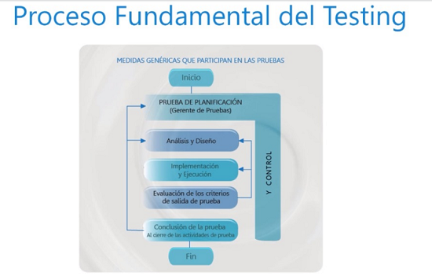
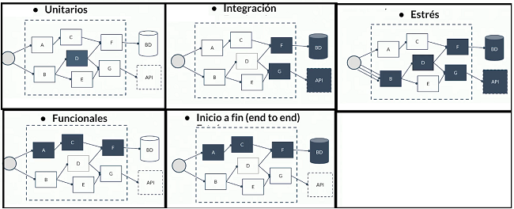
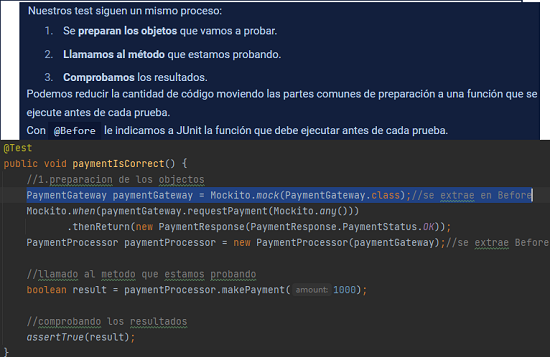
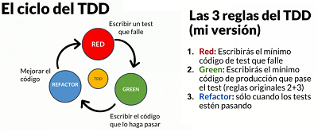
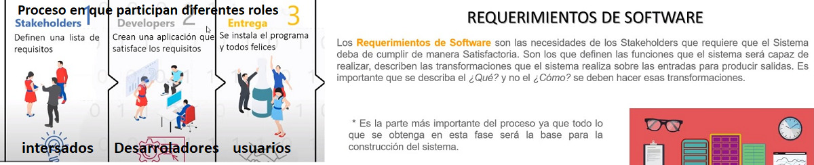

| Referencia | Descripcion | Ejemplo |
|---|---|---|
| test |
Beneficios * comprobar los requerimientos y asi identificar errores de desarollo * Documentacion/ejemplos, logramos que sea fiable nuestro desarrollo * Ayuda en el diseño (TDD) Desarrollo guiado por pruebas de software, o Test-driven development * confianza al desarollar y confianza para factorizar(evitando duda tecnica) * Menores costos de mantenimiento y reducece errores en producion Existen test automáticos y manuales los automáticos van a requerir tiempo de desarrollo y algunas veces no serán tan viables, pero de ser posible siempre trata de hacer test automáticos ya que: *Son más rápidos, Son más fiables ySon incrementales. |
 |
| Tipos de test |
Unitario: realizan pruebas a una función o clase muy
concreta de nuestro proyecto. Integración: prueban cómo se conectan diferentes componentes de nuestro proyecto. Funcionales: prueban una funcionalidad de nuestro proyecto, pueden involucrarse varias clases. Inicio a fin: prueba todo un proceso del proyecto. Estrés: útil para probar si nuestra aplicación puede soportar grandes cantidades de procesos y peticiones a la vez. |
 |
| Buenas praticas Test |
* La forma correcta de separar nuestras pruebas es realizar cada una en su propia función. * además, el nombre de la función debe describir que estamos probando. principio de utilitario * Nos podemos apoiyar en las Exepciones en java para describir mejor la traza error y razon para ser mostradada * En el objecto Assert.assertEquals() de la liberia JUnit nos permite realizar diferentes comparaciones. valor: Esperado y actual * Mockito core nos va a servir para simular clases mientras probamos, para no interferir en otras capas del negocio como en un sitema de pagos. tendra scope : test en pom.xml. ademas me permite que sean independientes a otras clases |
 |
| TDD: test Driven development o desarollo guiado por test | consiste en crear primero los test antes que las clases permitiendonos ver
si el diseño de una clase es el mas adecuado El ciclo del TDD: * Red: escribe un test hastq ue falle. * Green: escribe el codigo necesarrio para que el test pase. * Refactor: mejora el codigo Reglas 1. solo escribiras codigo de tets hasta que falle. 2. solo escribiras codigo de producion para pasar el test 3. no escribiras mas codigo de producion del necesarrio |
 |

|
||
|  | ||
| comandos |
los test que pasaron gradle jacocoTestReport file:///F:/ProyectosJava2/Junit/PlatziPlay/build/reports/tests/test/index.html covertura gradle clean test jacocoTestReport jacocoTestCoverageVerification file:///F:/ProyectosJava2/Junit/PlatziPlay/build/reports/jacoco/test/html/index.html |
|